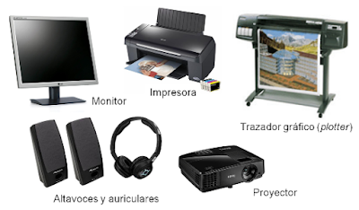

PROGRAMACION DE LAPSO 2021---2022
DISPOSITIVOS DE SALIDA DE UN COMPUTADOR
PROGRAMACION DE LAPSO 2021---2022
DISPOSITIVOS DE SALIDA DE UN COMPUTADOR
Los dispositivos de salida son aquellos dispositivos que le aportan a los ordenadores la indispensable función de comunicar información al usuario luego de haber sido procesada por él. Por ejemplo: monitor, parlantes, impresora.
1.Monitor
En los dispositivos de salida existe uno por excelencia, cuyo ejemplo sintetiza a la perfección la historia de esta clase de dispositivos: el monitor. A través de una tarjeta gráfica, se conectan la computadora y el periférico dejando observar en el monitor la imagen del procesamiento que se está realizando en la computadora, pudiendo a través de esa imagen el usuario tener noción de lo que efectivamente está haciendo 2. Tarjeta de sonido
Una tarjeta de sonido o placa de sonido es una tarjeta de expansión para computadoras que permite la salida de audio controlada por un programa informático llamado controlador (driver).
3. Impresora
Periférico utilizado para presentar información en papel. Es el complemento ideal de todos los procedimientos de texto o de gráficos con los que la PC cuenta, pues la impresora es la que lleva todo ese trabajo a la dimensión de los objetos físicos, más allá de la computadora.
4.Plotter
Trazador de gráficos, funcional para herramientas de dibujo técnico o arquitectura. Un plóter, ploteadora o trazador gráfico es una máquina que se utiliza junto con el ordenador e imprime en forma lineal.Se utilizan en diversos campos: ciencias, ingeniería, diseño, arquitectura, etc. Muchos son monocromáticos o de 4 colores, aunque también hay de ocho y doce colores.
5.Parlantes.
Dispositivo para reproducir cualquier clase de sonido, incluyendo música pero también los variados mensajes sonoros que emite la PC para dar mensajes al usuario.
6.Auriculares.
Equivalente a los parlantes, pero con un uso individual destinado a ser recibido por una única persona.
7.Proyector digital
Permite transmitir las imágenes del monitor a la forma de expresión en base a luz, para expandirlo en una pared y poder mostrarlo a grupos grandes de personas.
8.CD/DVD
Si bien no se trata de dispositivos periféricos, y no son únicamente dispositivos de salida (pues simultáneamente funciona como dispositivo de entrada) en los hechos allí puede llevarse la información procesada por la PC.
9.Cascos de Realidad Virtual.
Estos aparatos se colocan en la cabeza para simular una presencia real en un entorno virtual, emitiendo un mundo virtual en los visores dispuestos delante de nuestros ojos (salida) y recibiendo respuestas de nuestro comportamiento al mover la cabeza (entrada) en un proceso de retroalimentación que puede verse perfectamente en los videojuegos.
10_.tarjeta de video:Una tarjeta gráfica es una tarjeta de expansión de la placa base del ordenador que se encarga de procesar los datos provenientes de la unidad central de procesamiento y transformarlos en información comprensible y representable en el dispositivo de salida
 La tecnología informática continúa evolucionando y permite a las personas interactuar con los ordenadores de manera más eficiente. Gran parte de la interacción del ordenador se hace posible con el uso de dispositivos de salida--- equipo electrónico pequeño que se utiliza para los datos o información de salida en una CPU. Los dispositivos de salida vienen en una variedad de tipos y ayudan a crear una amplia gama de tareas que un ordenador puede lograr.
1.Monitor Una ventaja de un monitor de última generación es que nos da una mejor calidad en la imagen la cual nos ayuda a ver mejor las cosas que estemos realizando.
2.Impresora Sirve para presentar actividades, trabajos y todo tipo de información en papel ya sea para estudiar o para presentar a alguien más
3.Auriculares
Le ayudan a oír mejor. Diferentes estilos. Variedad de Costos.
4. Proyectores
Siendo una herramienta didáctica capaz de transmitir cualquier elemento multimedia (tanto imágenes como video o texto e incluso sonidos)
5. Plotter
Puede imprimir muchos diseños realizados en distintos materiales como cartón, cartulinas, telas y materiales difíciles de trabajar
6.Parlantes:
Algunas de sus ventajas es que pueden ser conectados a dispositivos que contengan su entrada, poseen un alto nivel para producir volumen y distribuye su sonido.
7.Tarjeta de sonido: El sonido 3D que ofrecen algunas tarjetas intenta dar al oyente la impresión de sonido envolvente. En el cine, el Sistema Surround está basado en el uso de varios altavoces situados en diferentes puntos de la sala. Sin embargo, obtener este efecto con sólo dos altavoces es mucho más complejo
8_.tarjeta de video:Una tarjeta de video hace que nuestros videos ,peliculas se vean mucho mejor ya que este aumenta la resolucion y son muy usadas para videos juegos
9.Cascos de Realidad Virtual.
Cuanta más resolución, mejor será la calidad de las imágenes que se proyectarán en el monitor. El texto será más fácil de leer, los elementos proyectados estarán más definidos y, por lo tanto, obtendrás una mejor experiencia de realidad virtual.
10.CD/DVDSe pueden almacenar audios y videos en una muy buena calidad.es portable se puede llevar a cuarquiel parte y Se puede reproducir en múltiples dispositivos.
1_.El monitor
Una Desventaja puede ser que hay algunos monitores que consumen mucha energía y son muy burnerables a los golpes son fragiles
2_.La impresora:
Hay que tener tinta o recargar los cartuchos para poder ser utilizados , los cartuchos son costosos
3_.Los auriculares
Pérdida de la audición y Costumbre al Aparato Auditivo
4_.Proyector
Requiere de un ordenador que transmita la señal digital a exponer (o algún otro dispositivo capaz de transmitir dicho contenido, siempre que éste sea compatible con el proyector).
5_.Plotter Es un dispositivo muy pesado y necesita un buen lugar en donde colocarlo debido a su gran tamaño y son muy costosos.
6_.Parlantes Algunas de sus desventajas es agunos deben conectarse a una tomacorriente y al computador, son frágiles y no gradúan bien su volumen.
7_.Tarjetas de sonidoSi un computador no tiene tarjeta de sonido fisica o integrada no podria reproducir ningun tipo se sonido
8_.Tarjeta de video Si un computador no tiene tarjeta de video fisica o integrada no podria mostrar ningun tipo de imagen
9_.Cascos de Realidad Virtual
Puede producir desorientación sensorial. Es común que tenga altos costos en su desarrollo, así como en su mantenimiento. También requiere inversión en cuanto a hardware y software. En algunos casos se reporta deficiencia en la interfaz entre programas y usuarios
10.CD/DVDDuran poco ya que se rayan facilmente , son poco confiables ya que la informacion no esta segura en el y tienen su capacidad limitada ejemplo los CD tienen una capacidad de almacenamiento de 700 MB y los DVD pueden almacenar 4.7 GB
La característica de ser periféricos determina que se trata de componentes extras o adicionales a la computadora, por lo que se podría prescindir de estos dispositivos.
Sin embargo, para el caso del monitor, que es el dispositivo de salida que muestra los resultados arrojados por la computadora convertidos en imágenes visuales que el usuario puede comprender, este realmente se requiere para poder interactuar con el equipo informático
1_.Adaptabilidad :
Con el paso de cada uno de los desarrollos y generaciones en el sector tecnológico, los dispositivos de salida se han ido adaptando y modificando para poder satisfacer las pretensiones o búsquedas cada vez más exigentes de los usuarios en relación a buenas experiencias auditivas, visuales o táctiles.
2_.Comodidad
:
La interacción que mantienen estos dispositivos es específicamente con las personas, es decir, los usuarios. Por esta razón, se han ido elaborando para que quien los usa los sienta cada vez más cómodos.Por este motivo la calidad de audio ha ido mejorando, las pantallas cansan la vista cada vez menos o las impresoras pueden ya imprimir objetos que son tangibles.
3_.Eficiencia
:
En concordancia con las mejoras evidentes a nivel de calidad en el sector de la tecnología, estos dispositivos se están adaptando y se van optimizando paulatinamente.
La función principal de los dispositivos de salida es transmitir la respuesta de la computadora en forma de una respuesta visual (monitor), auditiva (altavoces) o por medio de dispositivos multimedia (unidades de CD o DVD). Pueden recibir datos de otro dispositivo, pero no pueden enviar datos a otro dispositivo.
La presentación de los datos luego de ser procesados, en cualquiera de sus formas, es realizada por esta clase de dispositivos que serán mucho más útiles cuanto más puedan hacer sencilla y práctica la exposición del trabajo.
Los dispositivos de salida, junto a los dispositivos de entrada, constituyen el grupo de los periféricos que le dan verdadera utilidad a las computadoras.
DISPOSITIVOS DE SALIDA MAS CONOCIDOS
CRT son los que utilizan rayos catódicos, dibujando una imagen que barre la señal eléctrica, al tiempo que los LCD utilizan un cristal líquido mediante sustancias que comparten las propiedades de sólidos y líquidos a la vez.
VENTAJAS DE LOS DISPOSITIVOS DE SALIDA
DESVENTAJAS DE LOS DISPOSITIVOS DE SALIDA
CARACTERISTICAS DELO DISPOSITIVOS DE SALIDA
IMPORTANCIA DE LOS DISPOSITIVOS DE SALIDA
En el computador ocurren procesos en unidades de tiempo tan pequeñas que incluso parecen ser paralelos. Los dispositivos de salida nos permiten ver gran parte de los resultados de esos procesos.
Tan solo el monitor tiene gran parte de la responsabilidad de mostrarnos información que antes fue codificada y decodificada por el microprocesador.
Según el formato de los archivos, cada componente de salida de datos tendrá gran importancia para los usuarios y su uso se convertirá en algo fundamental para realizar tareas de diversas índoles.